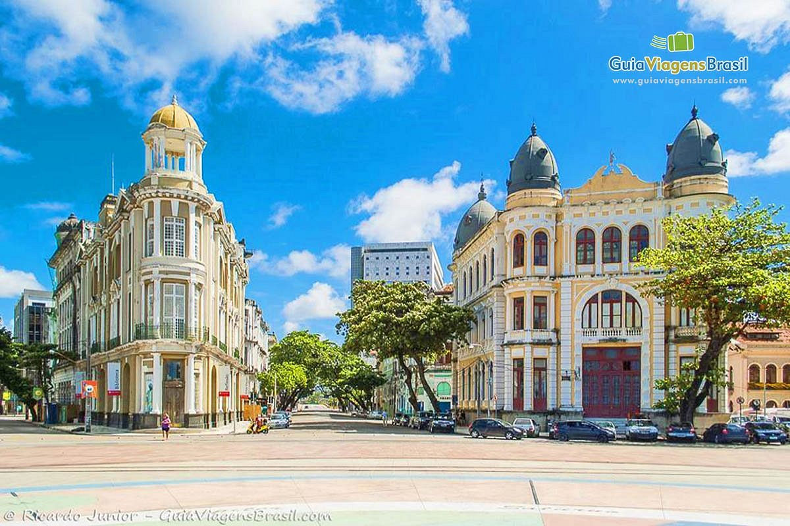

Sobre Recife
Uma das mais antigas cidades do Brasil, Recife surgiu por volta de 1537 como Ribeira de Mar dos Arrecifes, uma praia de pescadores e ancoradouro, onde se encontram as águas do mar e as dos rios Capibaribe e Beberibe. A povoação do Recife surgiu em 1561. Tornou-se a principal cidade da Capitania de Pernambuco, conhecida em todo o mundo comercial da época, graças à cultura extensiva da cana-de-açúcar. Isso despertou o interesse dos holandeses que, atraídos pela riqueza da capitania e por sua posição estratégica, invadiram e ocuparam a cidade durante 24 anos, entre 1630 e 1654. Sob domínio holandês passou a denominar-se Maritzstad (Mauricéia), em homenagem a Maurício de Nassau. Seu traçado regular resultou dos ideais renascentistas aliados à tradição holandesa de instalar cidades em terrenos baixos, Recife se desenvolveu junto à foz dos rios Capeberibe e Beberibe, construída com os sistemas e urbanização tradicionais dos invasores. Desse período são o Forte de São João Batista do Brum e a Fortaleza de São Tiago das Cinco Pontas. A ocupação holandesa chegou ao fim em 1654, na Campina do Taborda onde pernambucanos e holandeses, se enfrentaram nas duas batalhas dos montes Guararapes. No início do século XVIII, com sua economia garantida pelos mascates portugueses, ocorreram grandes transformações. Elevada à categoria de vila com a denominação de Recife, em 1709. A proximidade do porto favoreceu ainda mais sua expansão no século XIX, quando surgiram edificações neoclássicas e ecléticas associadas a igrejas e paróquias. A cidade marca o seu progresso com a instalação de uma Alfândega, a construção de várias pontes, a execução de aterros, que ganham novas superfícies úteis às terras alagadas. Elevada à categoria de cidade, em dezembro de 1823 e tornou-se capital de Pernambuco, em 1827. Em 1838, Francisco do Rego Barros (posteriormente Conde da Boa Vista) assumiu o governo da Província, cuja administração foi assinalada por notáveis melhoramentos urbanos e edificações, como a construção do Palácio do Governo e do Teatro Santa Isabel, obra do engenheiro francês Louis Léger Vauthier e de outros técnicos vindos de Paris. Cais, estradas, pontes e sistema de abastecimento de água, foram algumas das tarefas empreendidas por Barros. Esse brilhante período da vida do Recife foi alterado pela Revolução Praieira, em 1848, organizada pelo Partido Liberal, composto pelos "praieiros".
